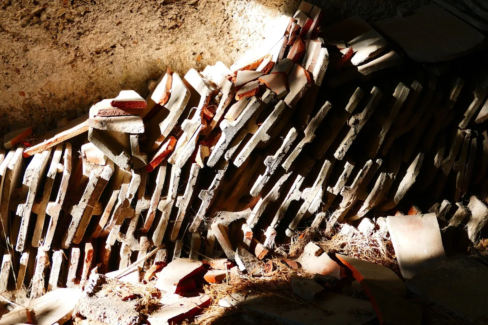

Pensez à conserver des carreaux !
Vous commencez un projet de rénovation ? Vous allez remplacer votre carrelage ? Nous l’avons déjà vu, lors de la commande des carreaux, il est important de calculer le pourcentage de perte lors de la pose.
Toutefois, il est également judicieux de prévoir des carreaux en plus, à stocker pour d’éventuels travaux futurs. Retrouvez dans cet article une astuce simple pour anticiper au mieux la vie de votre maison !
Anticiper des réparations ou des futurs travaux
Si vous fournissez les matériaux pour votre carreleur, vous avez dû prendre en compte le pourcentage de perte à la pose. Pour rappel, les artisans le calculent en fonction de la dimension du carrelage et du type de pose.
En fin de chantier, vous aurez tendance à vous dire “je ne vais pas garder 4 carreaux au fond d’un placard pour rien” : pourtant si ! Ceux-ci serviront dans 2 cas : pour faire des réparations ou pour des futurs travaux.
En effet, dans le temps, si vous remarquez qu’un carreau sonne creux, vous pouvez le remplacer à l’identique.
Le revêtement de sol de votre cuisine est neuf et vous souhaitez abattre une cloison ? Grâce à votre anticipation, vous pourrez carreler la “saignée” laissée par la cloison, avec la même teinte ! Nul ne sait de quoi le futur sera fait, vous comprenez donc qu’anticipé peut vous permettre d’éviter les bricolages et de conserver un carrelage harmonieux et uni.
Parquet, plinthes, tuiles, peinture : même combat
Depuis le début de cet article, nous faisons référence au carrelage. Pourtant, ce n’est pas le seul matériau concerné !
Dans le même esprit, vous pouvez répéter l’opération avec vos plinthes, vos tuiles, votre parquet ou encore vos nez de marches. En somme, tous les matériaux non-périssables utilisés par les professionnels du bâtiment.
Pour la peinture, c’est un peu plus compliqué. Bien que celle-ci se conserve plutôt bien à température ambiante, il n’est pas garanti qu’elle soit encore bonne après plusieurs années.
Toutefois, nous vous conseillons de noter et de conserver précieusement les références des couleurs utilisées. Vous pourrez donc acheter la même teinte, sans vous lancer dans des comparaisons douteuses avec le nuancier du magasin de bricolage…

Où stocker les matériaux
Nous l’avons vu, il est important de conserver le maximum d’éléments pour faciliter les interventions ultérieures.
Il est aussi important de stocker correctement les matériaux à l’intérieur de votre logement, sans quoi ceux-ci pourraient se dégrader. En d’autres mots, il n’est pas conseillé de stocker votre carrelage sur une palette sans protection au fond de votre jardin (pour éviter le gel en hiver et les UV en été).
Pour tous vos matériaux, privilégiez donc un endroit sec, à température ambiante et sans contact direct avec le soleil.
Conclusion
Mieux vaut prévenir que guérir, dans quelques mois vous aurez oublié les lames de parquet stockées au fond de votre placard, pourtant celles-ci pourront vous être d’une grande utilité en temps voulu.
Puisqu’un projet travaux s’anticipe, nous pensons qu’il est également important d’anticiper la vie de votre maison.
L’astuce proposée dans cet article n’est donc pas du tout technique, mais il vaut mieux y penser avant d’évacuer des matériaux neufs !
Vous avez terminé vos travaux sans lire cet article ? Vous avez tout jeté ? Vous pouvez quand même vous tourner vers les bourses d’échange de matériaux ou, avec un peu de chance, les ventes entre particuliers !